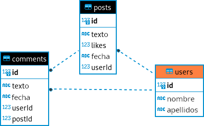

9.11 Repository pattern
Descarga
Descarga la base de datos desde aquí.
En este apartado vamos a aprender a añadir a un proyecto orientado a objetos la persistencia en base de datos, sin usar ninguna tecnología como Hibernate.
Partimos de una aplicación en la que los usuarios pueden escribir Posts y comentar Posts hechos por otros usuarios. Por lo que existen tres entidades: Users, Posts y Comments. En la siguiente imagen se muestran estas entidades representadas en una base de datos:

En programación existen una serie de estándares denominados Patrones de Diseño que debes conocer para poder programar según estos patrones y no reinventar la rueda.
Nota
Nosotros vamos a implementar “Repository Pattern” porque también os va a servir para cualquier aplicación tanto web, móvil o de escritorio.
Según la documentación de Android.
The repository pattern is a design pattern that isolates the data layer from the rest of the app. The data layer refers to the part of your app, separate from the UI, that handles the app’s data and business logic, exposing consistent APIs for the rest of your app to access this data.
Database Connection
Esta es la misma clase del apartado anterior:
| Java |
|---|
| /*
* @see <a href="https://stackoverflow.com/questions/6567839/if-i-use-a-singleton-class-for-a-database-connection-can-one-user-close-the-con">Stackoverflow Singleton</a>
* Patron Singleton
* ================
* Este patrón de diseño está diseñado para restringir la creación de objetos pertenecientes a una clase. Su intención consiste en garantizar que
* una clase sólo tenga una instancia y proporcionar un punto de acceso global a ella.
* El patrón Singleton se implementa creando en nuestra clase un método que crea una instancia del objeto sólo si todavía no existe alguna.
* Para asegurar que la clase no puede ser instanciada nuevamente se regula el alcance del constructor haciéndolo privado.
* Las situaciones más habituales de aplicación de este patrón son aquellas en las que dicha clase ofrece un conjunto de utilidades comunes
* para todas las capas (como puede ser el sistema de log, conexión a la base de datos, ...)
* o cuando cierto tipo de datos debe estar disponible para todos los demás objetos de la aplicación.
* El patrón Singleton provee una única instancia global gracias a que:
* - La propia clase es responsable de crear la única instancia.
* - Permite el acceso global a dicha instancia mediante un método de clase.
* - Declara el constructor de clase como privado para que no sea instanciable directamente.
*/
public class DatabaseConnection
{
private static DatabaseConnection dbInstance; //Variable para almacenar la unica instancia de la clase
private static java.sql.Connection con;
private DatabaseConnection() {
// El Constructor es privado!!
}
public static DatabaseConnection getInstance(){
//Si no hay ninguna instancia...
if(dbInstance==null){
dbInstance= new DatabaseConnection();
}
return dbInstance;
}
public static java.sql.Connection getConnection(){
if(con==null){
try {
String host = "jdbc:sqlite:src/main/resources/network";
con = java.sql.DriverManager.getConnection( host );
System.out.println("Conexión realizada");
} catch (java.sql.SQLException ex) {
System.out.println("Se ha producido un error al conectar: " + ex.getMessage());
}
}
return con;
}
}
|
Interfaz IRepository
Vamos a empezar creando la interfaz IRepository que han de implementar todas las clases que accedan a datos.
| Java |
|---|
| import java.sql.ResultSet;
import java.sql.SQLException;
import java.util.List;
public interface IRepository<T> {
List<T> findAll() throws SQLException;
T findById(int id) throws SQLException;
void save(T entity) throws SQLException;
void delete(T entity) throws SQLException ;
T bdToEntity(ResultSet rs) throws SQLException ;
}
|
Fijaos en la notación <T>. Esto indica que vamos a usar tipos genéricos. Puede ser cualquier clase de java.
findAll() va a recuperar datos de la base de datos y va a crear una lista de objetos T, donde Tserá usuario, post o comentario.findById(int id) va a recuperar el objeto T con dicho idsave(T entity) va a guardar el objeto T en la base de datosdeleteById(User user) va a borrar el objeto user en la base de datosbdToEntity(Resulset s) va a encargarse de convertir un registro de la base de datos en una clase de tipo T, por ejemplo un usuario, un post o un comentario.
SocialNetworkService
Un servicio es un tipo de clase que gestiona recursos que se usan en cualquier parte de la aplicación. Es este caso estamos definiendo el recurso java.sql.Connection:
| Java |
|---|
| public class SocialNetworkService {
static final java.sql.Connection connection = DatabaseConnection.getInstance().getConnection();
public static java.sql.Connection getConnection(){
return connection;
}
}
|
Más adelante lo usaremos en le método main
User
Esta es la clase que va a almacenar los datos de la base de datos. Es una clase POJO (Plain Old Java Object)
| Java |
|---|
| import java.util.ArrayList;
public class User
{
private int id;
private String name;
private String lastName;
public User()
{
this.name = "";
this.lastName = "";
this.id = -1;
}
public User(int id, String name, String lastName){
this.id = id;
this.name = name;
this.lastName = lastName;
}
public User(String name, String lastName)
{
this(-1, name, lastName);
}
public int getId(){
return id;
}
public void setId(int id){
this.id = id;
}
public String getName(){
return name;
}
public void setName(String name){
this.name = name;
}
public String getLastName(){
return lastName;
}
public void setLastName(String lastName){
this.lastName = lastName;
}
@Override
public String toString(){
return "ID: " + id + " Name: " + name + " Lastname: " + lastName;
}
}
|
UserRepositoryImpl
Esta clase va a ser la que realice el mapeo entre la base de datos y los objetos del modelo de datos de tal forma que va a corregir el llamado desfase objeto-relacional. Básicamente consiste en convertir los registros de la base de datos en objetos y almacenar en la base de datos los objetos de mi modelo.
| Java |
|---|
| import java.sql.PreparedStatement;
import java.sql.ResultSet;
import java.sql.SQLException;
import java.sql.Statement;
import java.util.ArrayList;
import java.util.List;
public class UserRepositoryImpl implements IRepository<User> {
private java.sql.Connection con;
public UserRepositoryImpl(){
this.con = SocialNetworkService.getConnection();
}
/**
* Se encarga de mapear um registro de la base de datos para converirlo en un objeto User
* @param rs
* @return Un objeto User
* @throws SQLException
*/
public User bdToEntity(ResultSet rs) throws SQLException {
return new User(rs.getInt("id"), rs.getString("name"), rs.getString("lastName"));
}
/**
* Consulta todos los registros de la tabla users
* @return Una lista de objetos User
* @throws SQLException
*/
public List<User> findAll() throws SQLException {
List<User> users = new ArrayList<>();
Statement st = this.con.createStatement();
//Ejecutar la consulta, guardando los datos devueltos en un Resulset
ResultSet rs = st.executeQuery("SELECT * FROM users ORDER BY lastName, name");
while(rs.next()){
//Mapeamos el registro de la BD en un User
User u = bdToEntity(rs);
//Añadir el User al conjunto de users
users.add(u);
}
return users;
}
//De momento estos tres métodos no hacen nada pero hacen falta para poder probar findAll
public User findById(int id) throws SQLException {
return new User();
}
public void save(User user) throws SQLException{
}
public void delete(User user) throws SQLException {
}
}
|
Para que pueda compilar esta clase es necesario que estén implementados (aunque no hagan nada) todos los métodos de la interfaz IRepository por eso el cuerpo del método no hace nada.
SocialNetwork
Esta clase va a contener el método main. De momento vamos a probar que podemos listar los usuarios de la aplicación.
| Java |
|---|
| import java.sql.SQLException;
import java.util.List;
public class SocialNetwork {
public static void main(String[] args) throws SQLException {
UserRepositoryImpl userRepository = new UserRepositoryImpl();
List<User> userList = userRepository.findAll();
for (User u : userList){
System.out.println(u);
}
}
}
|
Y la salida:
| Bash |
|---|
| ID: 4 Name: Janet Lastname: Espinosa
ID: 6 Name: Maria Lastname: Gallardo
ID: 3 Name: Andrés Lastname: García
ID: 8 Name: Alberto Lastname: Gracia
ID: 14 Name: Juan Lastname: Imedio
ID: 13 Name: Juan Lastname: Marqués
ID: 18 Name: Pedro Lastname: Martínez
ID: 12 Name: Juan Lastname: María
ID: 23 Name: Juan Pedro Lastname: Pascal
ID: 5 Name: Pepe Lastname: Ponz
|
UserRepositoryImpl II
Ya podemos finalizar UserRepositoryImpl con los métodos que faltan.
| Java |
|---|
| /**
* Busca un usuario por id en la tabla users
* @param id
* @return El objeto User o null si no existe
* @throws SQLException
*/
public User findById(int id) throws SQLException {
PreparedStatement st = con.prepareStatement("SELECT * FROM users WHERE id = ? ");
st.setInt(1, id);
ResultSet rs = st.executeQuery();
User u = null;
//Si la consulta devuelve algún resultado ...
if (rs.next()){
// ... lo mapeamos a un objeto Usuario
u = bdToEntity(rs);
}
//Devolvemos el Usuario ya mapeado
return u;
}
|
Devolvemos el User si existe en la tabla users
| Java |
|---|
| /**
* Guarda el usuario User en la base de datos, insertando si id es distinto de -1 o actualizando aquél
* registro con dicho id
* @param user
* @throws SQLException
*/
public void save(User user) throws SQLException{
if (user.getId() == -1){
ResultSet rs;
PreparedStatement st = null;
String query = "INSERT INTO users (name, lastName) VALUES (?, ?)";
//Fijáos en Statement.RETURN_GENERATED_KEYS. Permite recuperar el campo ID autogenerado por MySql
st = con.prepareStatement(query, Statement.RETURN_GENERATED_KEYS);
st.setString(1, user.getName());
st.setString(2, user.getLastName());
st.executeUpdate();
//Recuperar el id autogenerado
rs = st.getGeneratedKeys();
//Este ResultSet solo puede contener un registro: el ID autogenerado
if (rs.next()){
//Ahora ya sabemos cuál es el nuevo id del Usuario
user.setId(rs.getInt(1));
System.out.println("Autogenerated ID: " + user.getId());
}
}else{
PreparedStatement st = con.prepareStatement("UPDATE users SET name = ?, lastName = ? WHERE id = ?");
st.setString(1, user.getName());
st.setString(2, user.getLastName());
st.setInt(3, user.getId());
st.executeUpdate();
}
}
|
En esta caso estamos convirtiendo objetos User en registros de la base de datos users.
| Java |
|---|
| /**
* Elimina de la base de datos el usuario user
* @param user
* @throws SQLException
*/
public void delete(User user) throws SQLException {
PreparedStatement st = con.prepareStatement("DELETE FROM users WHERE id = ?");
st.setInt(1, user.getId());
st.executeUpdate();
st.close();
}
|
Y por último, borramos un objeto de su correspondiente usuario en la base de datos.
Nota:
Estos serían los componentes necesarios para implementar el patrón repositorio.
Resumiendo:
- tenemos la interfaz IRepository
- tenemos n clases POJO
- por cada clase POJO creamos una clase nombreDeClaseRepositoryImpl que implemente la interfaz IRepository
- También creamos la clase nombreDeClaseController que se va a encargar de gestionar el interfaz de usuario
UserController
Por último vamos a implementar una clase llamada UserController que nos va a servir como User Interface UI para nuestra aplicación. Esta clase ya no forma parte del patrón repositorio y pasaría a forma parte más bien del patrón Model View Controller (MVC) pues esta clase se encarga de la parte Controller (y en este caso, también View)
| Java |
|---|
| import java.sql.SQLException;
import java.util.List;
import java.util.Scanner;
public class UserController {
/**
* Imprime por pantalla todos los usuarios
* @throws SQLException
*/
public static void prinAllUsers() throws SQLException {
UserRepositoryImpl userRepository = new UserRepositoryImpl();
List<User> users = userRepository.findAll();
for (User user : users){
System.out.println(user);
}
}
/**
* Muestra una interfaz de usuario para añadir un usuario
* @throws SQLException
*/
public static void addUser() throws SQLException{
UserRepositoryImpl userRepository = new UserRepositoryImpl();
Scanner sc = new Scanner(System.in);
System.out.print("Name: ");
String name = sc.nextLine();
System.out.print("Lastname: ");
String lastName = sc.nextLine();
User user = new User(name, lastName);
userRepository.save(user);
}
/**
* Muestra la UI para modificar un usuario
* @throws SQLException
*/
public static void modifyUser() throws SQLException{
UserRepositoryImpl userRepository = new UserRepositoryImpl();
prinAllUsers();
Scanner sc = new Scanner(System.in);
System.out.print("Enter User id to modify: ");
int userId = sc.nextInt();
sc.nextLine();
System.out.print("New name: ");
String name = sc.nextLine();
System.out.print("New lastname: ");
String lastName = sc.nextLine();
userRepository.save(new User(userId, name, lastName));
}
/**
* Muestra la UI para borrar un usuario.
* @throws SQLException
*/
public static void deleteUser() throws SQLException{
UserRepositoryImpl userRepository = new UserRepositoryImpl();
prinAllUsers();
Scanner sc = new Scanner(System.in);
System.out.println("Enter user id to delete: ");
User user = userRepository.findById(sc.nextInt());
userRepository.delete(user);
}
}
|
En los métodos addUser, updateUser y deleteUser se piden datos por pantalla y se llama al método del repositorio correspondiente: userRepository.save o userRepository.delete
Posts
Crea las clases necesarias para poder trabajar con la entidad Post. Como ayuda, ten en cuenta que esta entidad tiene un objeto de la clase User que deberás recuperar mediante new UserRepositoryImpl().findById(rs.getInt("userId"))
Lo más complicado será la parte 1 en User ya que debe tener un método que fije los Post de dicho usuario.
En principio sería tan fácil como hacer en el método bdToEntity de UserRepositoryImpl
java
PostRepositoryImpl repository = new PostRepositoryImpl();
user.setPosts(repository.findByUser(user));
Pero esto provoca un error en tiempo de ejecución StackOverflow debido a que entra en un bucle infinito ya que el método bdToEntity llama a findByUser que a su vez llama a bdToEntity y así hasta el infinito.
La solución es guardar los elementos en caché: cada vez que convierto una entidad a objeto la guardo en esta caché. Cuando debo mapear algún registro primero miro en caché y devuelvo la entidad o mapeo si no existe la entidad.
Creamos una variable de instancia en cada Repositorio. Por ejemplo para UserRepositoryImpl
| Java |
|---|
| private Set<User> usersCached = new HashSet<>();
|
Creamos un método para comprobar si está en caché:
| Java |
|---|
| private User getUserCached(int i){
for(User user : usersCached){
if (user.getId() == i)
return user;
}
return null;
}
|
Que usamos en bdToEntity
| Java |
|---|
| public User bdToEntity(ResultSet rs) throws SQLException {
User user = getUserCached(rs.getInt("id"));
if (user == null) {
user = new User(rs.getInt("id"), rs.getString("name"), rs.getString("lastName"));
usersCached.add(user);
PostRepositoryImpl repository = new PostRepositoryImpl();
user.setPosts(repository.findByUser(user));
}
return user;
}
|
Nota:
No creáis que en la práctica es tan complicado. Para eso están los frameworks ORM (Object Relational Mapping) que nos facilitan mucho la vida y ellos mismos ya tratan todo el tema de cachés, repositorios, CRUD, etc. Este apartado es simplemente para que creéis desde cero un mini framework.
Seguramente en la empresa utilizaréis Hibernate, Spring Boot, Doctrine, …
Comments
Ahora ya puedes implementar la gestión del los comentarios.